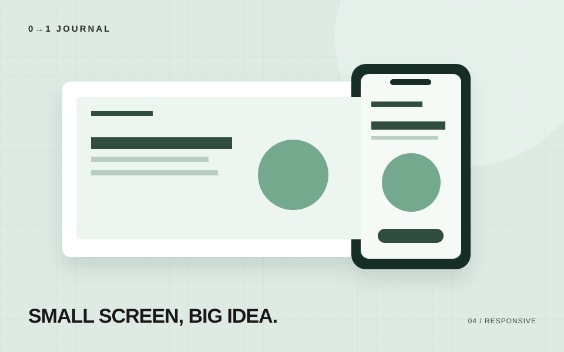

この記事の目次
PCで完成したページをスマートフォンで開くと、思ったより読みにくいことがあります。レイアウトが一列になるだけでは、確認は終わりません。
1. 文字が無理なく読めるか
見出しが細かく折り返されたり、本文の一行が短くなりすぎたりしていないかを見ます。文字を小さくして収める前に、左右の余白や文の長さを見直してみましょう。
2. 画像がはみ出していないか
画像の元の幅が大きくても、表示領域の中に収まるようにします。縦横比も保ちます。
.article-body img {
max-width: 100%;
height: auto;
}
写真の一部を切り抜くデザインでは、必要な被写体が見えているかも確認します。
3. リンクやボタンが押しやすいか
文字が読めても、隣のリンクとの間隔が狭いと操作を間違えやすくなります。ボタン内の余白と、ボタン同士の間隔を確認してください。
PCのマウス操作だけでなく、実際のタッチ操作でも試すと気づきやすくなります。
4. 意図しない横スクロールがないか
長いURL、コード、表、固定幅のカードは、はみ出しの原因になりやすい要素です。
コードや表を横にスクロールさせる場合は、その部分だけにスクロール領域を設けます。ページ全体のはみ出しを隠すだけでは、見えなくなった情報にアクセスできません。
5. フォームを最後まで操作できるか
入力欄を選んでキーボードが開いた状態や、エラーが表示された状態も確認します。
- 入力する内容がラベルで分かるか
- エラーの理由と直し方が表示されるか
- 送信ボタンまで移動できるか
- 送信後に受付結果を確認できるか
幅を変える確認と、実機の確認
ブラウザで表示幅を変える確認は便利ですが、実機での入力やスクロールの感触までは同じになりません。両方を使って、気づいた問題を記録しましょう。
記事についてのお問い合わせ
← 記事一覧に戻る記載内容へのご質問や訂正のご連絡は、hello@junkbranding.comまでお願いします。